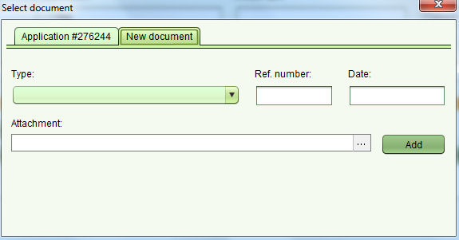

Add Document
Several functionalities (such as Applications and Services) need documents to be added.
- To add a document to an Application, use the Documents tab in the Application Details screen. Fill in the details of the document, then click the “...”button in the Attachment text field to attach a digital document.
- To add documents to a service go to the Property Details screen and then click “Link Paper Title” (for almost all the services) or “Add” (for Cadastre Change, Redefine Cadastre...) in the document section.
This will open a tabbed screen for selecting the needed document from the Application’s documents list or for adding a new document

For adding a new document fill in the details of the document,
click the “...”button in the Attachment text field to attach a digital document
and then click “Add” button. The document is added to the list of property's paper titles in the Property Details screen
Also See